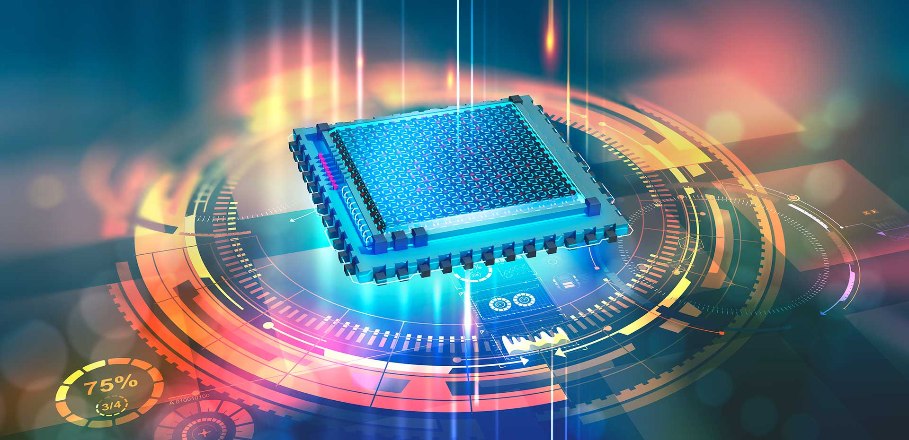

Pagina web de la materia arquitectura de computadoras
esta es una pagina web del proyecto de la materia de arquitectura de computadoras con el maestro Miguel Maldonado Leza.
Mi nombre es Jose Jaime Gonzalez Flores y estoy en la clase de 4 a 5 de la tarde. Es un apagina sobre todo los temas de la materia y lo que hemos
visto del curso.

temas:
unidad 1: Arquitecturas de computo
- Arquitectura de computo
- Analisis de los componentes
- Memoria
- Manejo de entrada/salida
unidad 2: Estructura y funcionamiento de la unidad central de procesamiento
- Organizador del procesador
- Estructura de registros
- El ciclo de instruccion
- Casos de estudio de CPU reales.
unidad 3: Seleccion de componentes para ensamble de equipo de computo
- Chip set.
- Aplicaciones
- Ambientes de servicio
unidad 4: Procesamiento paralelo
- Aspectos basicos de la computadora paralela
- Tipos de computacion paralela
- Sistemas de memoria(compartida)
- Sistemas de memoria distribuida
- Casos para estudio